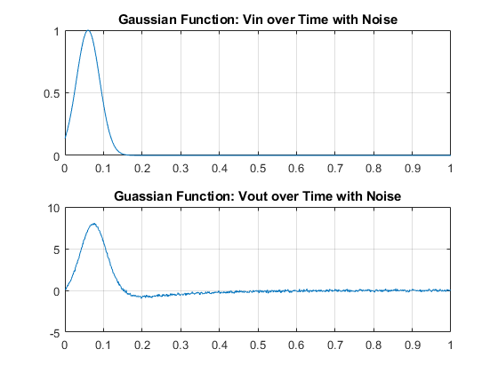
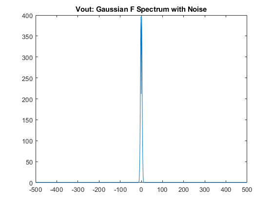
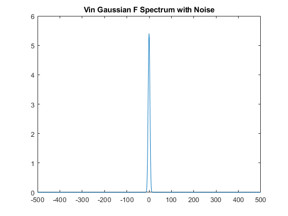
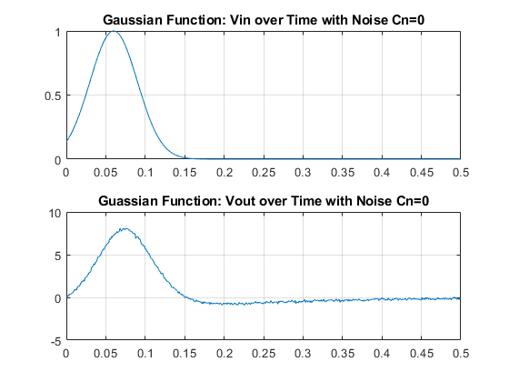
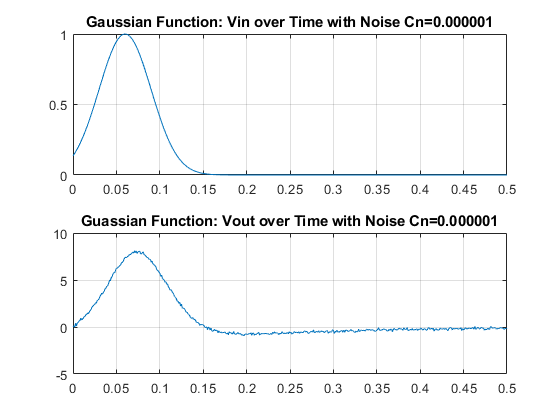
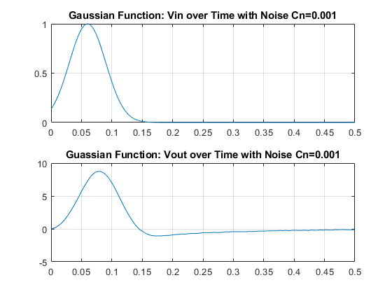
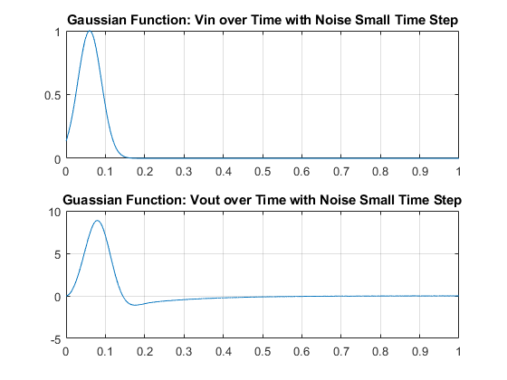
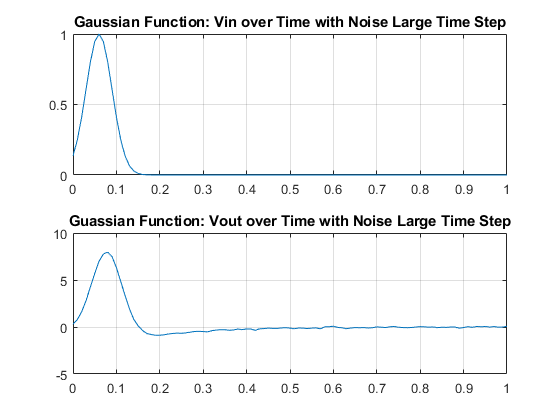

Assignemnt 4 Part 3: Circuit with Noise
Contents
Part 3: MNA Solution for linear circuit with noise
Parameters
clc G1=1/1; C2=0.25; G2=0.5; L=0.2; G3=0.1; G4=100; G5=1/1000; ALPHA=100; Vin=10; vm=-10; Iin=0; Cn=0.00001;
Construction of G, C, and F matrix
% Additional parameters are needed here. Plus, the IL and the I3 are no % longer the same value, thus I had to adjust the matrices a bit more than % what was expected. Instead of explicitly defining I3 in the G matric,I used V3 % multiplied by G3 (in otherwords V3/R3) as a place holder for it in the G matrix. %X=[V1 Iin V2 V3 V4 V5 IL I4 Iin] % Updated C and G Matrix G=[-G1,1, G1, 0,0,0,0,0,0; ... G1,0, -G1-G2,0,0,0,-1,0,0;... 0,0,0,-G3,0,0,1,0,-1;... 0,0,1,-1,0,0,0,0,0;... 0,0,0,-ALPHA*G4*G3,0,G4,0,1,0;... 0,0,0,ALPHA*G4*G3,0,-G4-G5,0,0,0;... 1,0,0,0,0,0,0,0,0; 0,0,0,-ALPHA*G3,1,0,0,0,0;... 0,0,0,0,0,0,0,0,1]; C = [-C2,0,C2,0,0,0,0,0,0;... C2,0,-C2,0,0,0,0,0,0;.... 0,0,0,-Cn,0,0,0,0,0;... 0,0,0,0,0,0,-L,0,0;... 0,0,0,0,0,0,0,0,0;... 0,0,0,0,0,0,0,0,0;... 0,0,0,0,0,0,0,0,0;... 0,0,0,0,0,0,0,0,0;... 0,0,0,0,0,0,0,0,0]; F=[0 0 0 0 0 0 vm 0 Iin]; %F vector now has a current source term
I) Simulation
deltaT=0.001;
A=C/(deltaT)+G;
Vjm=[0; 0; 0; 0; 0; 0; 0; 0; 0];
vx=@(t) exp(-(1/2)*((t-0.06)/(0.03))^2);
voutval=zeros(1000,1);
vinval2=zeros(1000,1);
count=1;
time=zeros(1000,1);
for t=0:deltaT:1
% Random noise generator
Iin = randn(1)*0.001;
time(count)=t;
F=[0 0 0 0 0 0 vx(t) 0 Iin];
Vj=inv(A)*(C*Vjm/deltaT + F');
voutval(count)=Vj(6);
vinval2(count)=Vj(1);
Vjm=Vj;
count=count+1;
end
figure(1)
subplot(2,1,2)
plot(time,voutval)
title('Guassian Function: Vout over Time with Noise')
grid on
subplot(2,1,1)
plot(time,vinval2)
title('Gaussian Function: Vin over Time with Noise')
grid on
% Vout Frequency plots
fs=1000;
fvout=fft(voutval);
n=length(voutval);
Y=fftshift(fvout);
fshift = (-n/2:n/2-1)*(fs/n); % zero-centered frequency range
powershift = abs(Y).^2/n; % zero-centered power
figure(2)
plot(fshift,powershift)
title('Vout: Gaussian F Spectrum with Noise')
% Vin
fvin=fft(vinval2);
n=length(vinval2);
t=(0:n-1)*(fs/n);
power = abs(fvin).^2 / n;
Y=fftshift(fvin);
fshift = (-n/2:n/2-1)*(fs/n); % zero-centered frequency range
powershift = abs(Y).^2/n; % zero-centered power
figure(3)
plot(fshift,powershift)
title('Vin Gaussian F Spectrum with Noise')
   II) Three Different Capacitance Value Simulations
% 1. Capacitor One: 0 Farads Cn=0; C = [-C2,0,C2,0,0,0,0,0,0;... C2,0,-C2,0,0,0,0,0,0;.... 0,0,0,-Cn,0,0,0,0,0;... 0,0,0,0,0,0,-L,0,0;... 0,0,0,0,0,0,0,0,0;... 0,0,0,0,0,0,0,0,0;... 0,0,0,0,0,0,0,0,0;... 0,0,0,0,0,0,0,0,0;... 0,0,0,0,0,0,0,0,0]; A=C/(deltaT)+G; Vjm=[0; 0; 0; 0; 0; 0; 0; 0; 0]; vx=@(t) exp(-(1/2)*((t-0.06)/(0.03))^2); voutval=zeros(500,1); vinval2=zeros(500,1); count=1; time=zeros(500,1); for t=0:deltaT:0.5 Iin = randn(1)*0.001; time(count)=t; F=[0 0 0 0 0 0 vx(t) 0 Iin]; Vj=inv(A)*(C*Vjm/deltaT + F'); voutval(count)=Vj(6); vinval2(count)=Vj(1); Vjm=Vj; count=count+1; end figure(4) subplot(2,1,2) plot(time,voutval) title('Guassian Function: Vout over Time with Noise Cn=0') grid on subplot(2,1,1) plot(time,vinval2) title('Gaussian Function: Vin over Time with Noise Cn=0') grid on fs=1000; % 2. Capacitor Number 2: 0.000001 Farads Cn=0.000001; Vjm=[0; 0; 0; 0; 0; 0; 0; 0; 0]; C = [-C2,0,C2,0,0,0,0,0,0;... C2,0,-C2,0,0,0,0,0,0;.... 0,0,0,-Cn,0,0,0,0,0;... 0,0,0,0,0,0,-L,0,0;... 0,0,0,0,0,0,0,0,0;... 0,0,0,0,0,0,0,0,0;... 0,0,0,0,0,0,0,0,0;... 0,0,0,0,0,0,0,0,0;... 0,0,0,0,0,0,0,0,0]; A=C/(deltaT)+G; vx=@(t) exp(-(1/2)*((t-0.06)/(0.03))^2); voutval=zeros(500,1); vinval2=zeros(500,1); count=1; time=zeros(500,1); for t=0:deltaT:0.5 Iin = randn(1)*0.001; time(count)=t; F=[0 0 0 0 0 0 vx(t) 0 Iin]; Vj=inv(A)*(C*Vjm/deltaT + F'); voutval(count)=Vj(6); vinval2(count)=Vj(1); Vjm=Vj; count=count+1; end figure(7) subplot(2,1,2) plot(time,voutval) title('Guassian Function: Vout over Time with Noise Cn=0.000001') grid on subplot(2,1,1) plot(time,vinval2) title('Gaussian Function: Vin over Time with Noise Cn=0.000001') grid on % Next Cap % 3. Capacitor Number 3: 0.001 Farads Cn=0.001; C = [-C2,0,C2,0,0,0,0,0,0;... C2,0,-C2,0,0,0,0,0,0;.... 0,0,0,-Cn,0,0,0,0,0;... 0,0,0,0,0,0,-L,0,0;... 0,0,0,0,0,0,0,0,0;... 0,0,0,0,0,0,0,0,0;... 0,0,0,0,0,0,0,0,0;... 0,0,0,0,0,0,0,0,0;... 0,0,0,0,0,0,0,0,0]; Vjm=[0; 0; 0; 0; 0; 0; 0; 0; 0]; A=C/(deltaT)+G; vx=@(t) exp(-(1/2)*((t-0.06)/(0.03))^2); voutval=zeros(500,1); vinval2=zeros(500,1); count=1; time=zeros(500,1); for t=0:deltaT:0.5 Iin = randn(1)*0.001; time(count)=t; F=[0 0 0 0 0 0 vx(t) 0 Iin]; Vj=inv(A)*(C*Vjm/deltaT + F'); voutval(count)=Vj(6); vinval2(count)=Vj(1); Vjm=Vj; count=count+1; end figure(8) subplot(2,1,2) plot(time,voutval) title('Guassian Function: Vout over Time with Noise Cn=0.001') grid on subplot(2,1,1) plot(time,vinval2) title('Gaussian Function: Vin over Time with Noise Cn=0.001') grid on  
III) Vary the Time Step
1. Time Step = 0.00001
deltaT=0.00001;
Vjm=[0; 0; 0; 0; 0; 0; 0; 0; 0];
C=0.00001;
C = [-C2,0,C2,0,0,0,0,0,0;...
C2,0,-C2,0,0,0,0,0,0;....
0,0,0,-Cn,0,0,0,0,0;...
0,0,0,0,0,0,-L,0,0;...
0,0,0,0,0,0,0,0,0;...
0,0,0,0,0,0,0,0,0;...
0,0,0,0,0,0,0,0,0;...
0,0,0,0,0,0,0,0,0;...
0,0,0,0,0,0,0,0,0];
A=C/(deltaT)+G;
vx=@(t) exp(-(1/2)*((t-0.06)/(0.03))^2);
voutval=zeros(10000,1);
vinval2=zeros(10000,1);
count=1;
time=zeros(10000,1);
for t=0:deltaT:1
Iin = randn(1)*0.001;
time(count)=t;
F=[0 0 0 0 0 0 vx(t) 0 Iin];
Vj=inv(A)*(C*Vjm/deltaT + F');
voutval(count)=Vj(6);
vinval2(count)=Vj(1);
Vjm=Vj;
count=count+1;
end
figure(9)
subplot(2,1,2)
plot(time,voutval)
title('Guassian Function: Vout over Time with Noise Small Time Step')
grid on
subplot(2,1,1)
plot(time,vinval2)
title('Gaussian Function: Vin over Time with Noise Small Time Step')
grid on
% Part D
% 2. Time Step = 0.01
deltaT=0.01;
Vjm=[0; 0; 0; 0; 0; 0; 0; 0; 0];
C=0.00001;
C = [-C2,0,C2,0,0,0,0,0,0;...
C2,0,-C2,0,0,0,0,0,0;....
0,0,0,-Cn,0,0,0,0,0;...
0,0,0,0,0,0,-L,0,0;...
0,0,0,0,0,0,0,0,0;...
0,0,0,0,0,0,0,0,0;...
0,0,0,0,0,0,0,0,0;...
0,0,0,0,0,0,0,0,0;...
0,0,0,0,0,0,0,0,0];
A=C/(deltaT)+G;
vx=@(t) exp(-(1/2)*((t-0.06)/(0.03))^2);
voutval=zeros(100,1);
vinval2=zeros(100,1);
count=1;
time=zeros(100,1);
for t=0:deltaT:1
Iin = randn(1)*0.001;
time(count)=t;
F=[0 0 0 0 0 0 vx(t) 0 Iin];
Vj=inv(A)*(C*Vjm/deltaT + F');
voutval(count)=Vj(6);
vinval2(count)=Vj(1);
Vjm=Vj;
count=count+1;
end
figure(10)
subplot(2,1,2)
plot(time,voutval)
title('Guassian Function: Vout over Time with Noise Large Time Step')
grid on
subplot(2,1,1)
plot(time,vinval2)
title('Gaussian Function: Vin over Time with Noise Large Time Step')
grid on
 